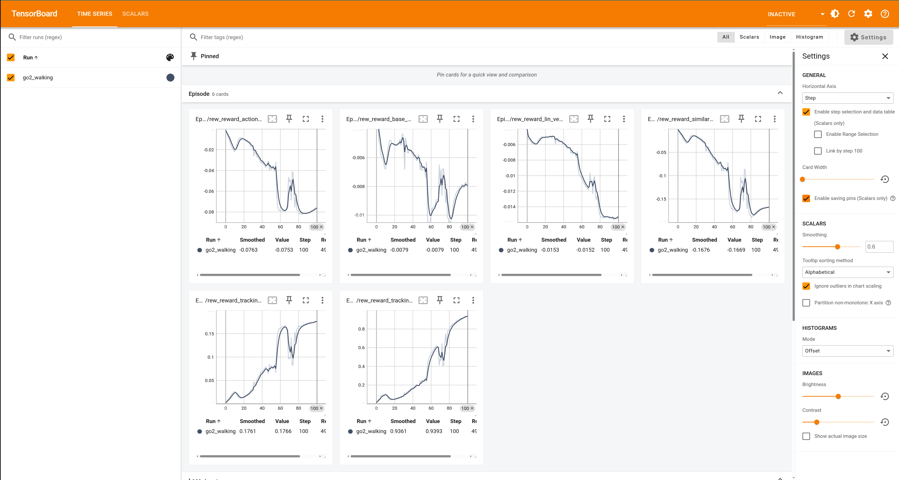

PPO
Proximal Policy Optimization
This package integrate rsl_rl package and use PPO algorithm inside this library.
How to make your experiment.
Example source code is in this directory.
.
└── go2_walking # Name of the experiment
├── command_config.yaml # Configuration for the robot command
├── entities.py # Python script for listing up entities inside experiment
├── environment_config.yaml # Configuration for the environment
├── observation_config.yaml # Configuration for the observation
├── reward_functions.py # Python script for define reward functions
├── simulation_config.yaml # Configuration for the simulation
└── train_config.yaml # Configuration for the training
1 directory, 7 files
command_config.yaml
Note
This yaml file is optional for the experiment.
num_commands: 3 # number of commands
lin_vel_x_range: [0.5, 0.5] # range of linear velocity in x direction
lin_vel_y_range: [0.0, 0.0] # range of linear velocity in y direction
ang_vel_range: [0.0, 0.0] # range of angular velocity
This file describes the configuration for the robot command.
In this experiment, the robot can be given a speed command.
The speed commands are given in the forward and backward directions and in the direction of rotation.
entities.py
Warning
This python script is required for the experiment.
import genesis as gs
from typing import List
def get_entities() -> List[gs.morphs.Morph]:
return [gs.morphs.Plane()]
This python script describes the configuration for the entities inside simulation.
This script must contain function named get_entities() with List[gs.morphs.Morph] return type.
environment_config.yaml
Note
This yaml file is optional for the experiment.
default_joint_angles: # The default joint angles for the robot
FL_hip_joint: 0.0 # Front left hip joint, this name comes from the robot URDF
FR_hip_joint: 0.0
RL_hip_joint: 0.0
RR_hip_joint: 0.0
FL_thigh_joint: 0.8
FR_thigh_joint: 0.8
RL_thigh_joint: 1.0
RR_thigh_joint: 1.0
FL_calf_joint: -1.5
FR_calf_joint: -1.5
RL_calf_joint: -1.5
RR_calf_joint: -1.5
kp: 20.0 # Proportional gain for the PD controller
kd: 0.5 # Derivative gain for the PD controller
base_init_pos: [0.0, 0.0, 0.42] # Initial position of the robot base
base_init_quat: [1.0, 0.0, 0.0, 0.0] # Initial orientation of the robot base
episode_length_seconds: 20.0 # Length of the episode in seconds
resampling_time_seconds: 4.0 # Time between resampling the action
action_scale: 0.25 # Scale for the action space
simulate_action_latency: true # Whether to simulate action latency
clip_action: 100.0 # Clip the action to a certain range
This file describes the configuration for the simulation environment.
The initial posture of the robot, hyperparameter of the PPO algorithm, etc. can be set.
observation_config.yaml
Note
This yaml file is optional for the experiment.
obs_scales: # Scale for each observation
lin_vel: 2.0 # Scale for linear velocity
ang_vel: 0.25 # Scale for angular velocity
dof_pos: 1.0 # Scale for joint position
dof_vel: 0.05 # Scale for joint velocity
This file describes the configuration for the observation.
Currently, only the Observation scale can be set.
reward_functions.py
Warning
This python script is required for the experiment.
import torch
def get_reward_functions():
reward_functions = []
# ------------ reward functions----------------
def reward_tracking_lin_vel(self):
# Tracking of linear velocity commands (xy axes)
lin_vel_error = torch.sum(
torch.square(self.commands[:, :2] - self.base_lin_vel[:, :2]), dim=1
)
return torch.exp(-lin_vel_error / 0.25)
reward_functions.append((reward_tracking_lin_vel, 1.0))
def reward_tracking_ang_vel(self):
# Tracking of angular velocity commands (yaw)
ang_vel_error = torch.square(self.commands[:, 2] - self.base_ang_vel[:, 2])
return torch.exp(-ang_vel_error / 0.25)
reward_functions.append((reward_tracking_ang_vel, 0.2))
def reward_lin_vel_z(self):
# Penalize z axis base linear velocity
return torch.square(self.base_lin_vel[:, 2])
reward_functions.append((reward_lin_vel_z, -1.0))
def reward_action_rate(self):
# Penalize changes in actions
return torch.sum(torch.square(self.last_actions - self.actions), dim=1)
reward_functions.append((reward_action_rate, -0.005))
def reward_similar_to_default(self):
# Penalize joint poses far away from default pose
return torch.sum(torch.abs(self.dof_pos - self.default_dof_pos), dim=1)
reward_functions.append((reward_similar_to_default, -0.1))
def reward_base_height(self):
# Penalize base height away from target
return torch.square(self.base_pos[:, 2] - 0.3)
reward_functions.append((reward_base_height, -50.0))
return reward_functions
This python script defines the reward functions in this experiment.
This python script must contain get_reward_functions() function with the return value is a function object that takes self as its first argument and changes torch.Tensor to a list of tuples of type float.
1st element of the tuple means the each reward function, 2nd element of the tuple means the scale of the each reward function.
The functions defined in this script are added as member functions of the PPOEnv class defined in ppo_env.py and executed at each simulation frame.
simulation_config.yaml
Note
This yaml file is optional for the experiment.
simulate_action_latency: True # Whether to simulate action latency
dt: 0.02 # Time step for the simulation
This file describes the configuration for the simulation latency and time step.
train_config.yaml
Note
This yaml file is optional for the experiment.
algorithm: ppo # Algorithm to use
policy: # Settings for the policy. See also, https://github.com/leggedrobotics/rsl_rl
activation: elu # Activation function for the policy network
actor_hidden_dims: [512, 256, 128] # Hidden dimensions for the actor network
critic_hidden_dims: [512, 256, 128] # Hidden dimensions for the critic network
init_noise_std: 1.0 # Initial noise standard deviation
class_name: ActorCritic # Loading the ActorCritic class
runner:
experiment_name: go2_walking # Name of the experiment
checkpoint: -1 # Checkpoint to load, -1 means the latest checkpoint
load_run: -1 # Load run number, -1 means the latest run
log_interval: 1 # Interval for logging
max_iterations: 101 # Maximum number of iterations
runner_class_name: OnPolicyRunner # Class name for the runner. See also, https://github.com/leggedrobotics/rsl_rl
This file describes the configuration for the training.
This file only needs while training.
Train
Command usage is below.
uv run ppo_train --help
usage: ppo_train [-h] -c CONFIG -d {cpu,gpu} [--num_environments NUM_ENVIRONMENTS] [--urdf_path URDF_PATH]
options:
-h, --help show this help message and exit
-c CONFIG, --config CONFIG
Path to the config directory (default: /home/masaya/workspace/genesis_ros/genesis_ros/ppo/ppo_train.py)
-d {cpu,gpu}, --device {cpu,gpu}
Specify device which you want to run PPO and simulation. (default: None)
--num_environments NUM_ENVIRONMENTS
Number of environments (default: 4096)
--urdf_path URDF_PATH
Path to the URDF file (default: urdf/go2/urdf/go2.urdf)
If the training script succeed, show dialogs like below.
uv run ppo_train --config genesis_ros/ppo/config/go2_walking/ --device gpu
Number of joints: 12
Joints : ['FL_hip_joint', 'FR_hip_joint', 'RL_hip_joint', 'RR_hip_joint', 'FL_thigh_joint', 'FR_thigh_joint', 'RL_thigh_joint', 'RR_thigh_joint', 'FL_calf_joint', 'FR_calf_joint', 'RL_calf_joint', 'RR_calf_joint']
Number of actions: 12
Adding reward function: reward_tracking_lin_vel
Reward_scale = 1.0
Reward scale considering time delta = 0.02
Adding reward function: reward_tracking_ang_vel
Reward_scale = 0.2
Reward scale considering time delta = 0.004
Adding reward function: reward_lin_vel_z
Reward_scale = -1.0
Reward scale considering time delta = -0.02
Adding reward function: reward_action_rate
Reward_scale = -0.005
Reward scale considering time delta = -0.0001
Adding reward function: reward_similar_to_default
Reward_scale = -0.1
Reward scale considering time delta = -0.002
Adding reward function: reward_base_height
Reward_scale = -50.0
Reward scale considering time delta = -1.0
Reward functions setup finished.
Actor MLP: Sequential(
(0): Linear(in_features=45, out_features=512, bias=True)
(1): ELU(alpha=1.0)
(2): Linear(in_features=512, out_features=256, bias=True)
(3): ELU(alpha=1.0)
(4): Linear(in_features=256, out_features=128, bias=True)
(5): ELU(alpha=1.0)
(6): Linear(in_features=128, out_features=12, bias=True)
)
Critic MLP: Sequential(
(0): Linear(in_features=45, out_features=512, bias=True)
(1): ELU(alpha=1.0)
(2): Linear(in_features=512, out_features=256, bias=True)
(3): ELU(alpha=1.0)
(4): Linear(in_features=256, out_features=128, bias=True)
(5): ELU(alpha=1.0)
(6): Linear(in_features=128, out_features=1, bias=True)
)
################################################################################
Learning iteration 0/101
Computation: 83209 steps/s (collection: 0.861s, learning 0.320s)
Value function loss: 0.0125
Surrogate loss: -0.0004
Mean action noise std: 1.00
Mean total reward: 0.17
Mean episode length: 22.88
Mean episode rew_reward_tracking_lin_vel: 0.0107
Mean episode rew_reward_tracking_ang_vel: 0.0020
Mean episode rew_reward_lin_vel_z: -0.0040
Mean episode rew_reward_action_rate: -0.0014
Mean episode rew_reward_similar_to_default: -0.0012
Mean episode rew_reward_base_height: -0.0025
--------------------------------------------------------------------------------
Total timesteps: 98304
Iteration time: 1.18s
Total time: 1.18s
ETA: 119.3s
Storing git diff for 'genesis_ros' in: logs/go2_walking/git/genesis_ros.diff
################################################################################
Learning iteration 1/101
Computation: 189431 steps/s (collection: 0.381s, learning 0.138s)
Value function loss: 0.0056
Surrogate loss: -0.0047
Mean action noise std: 1.00
Mean total reward: 0.39
Mean episode length: 44.82
Mean episode rew_reward_tracking_lin_vel: 0.0284
Mean episode rew_reward_tracking_ang_vel: 0.0050
Mean episode rew_reward_lin_vel_z: -0.0053
Mean episode rew_reward_action_rate: -0.0040
Mean episode rew_reward_similar_to_default: -0.0053
Mean episode rew_reward_base_height: -0.0034
--------------------------------------------------------------------------------
Total timesteps: 196608
Iteration time: 0.52s
Total time: 1.70s
ETA: 85.0s
################################################################################
Learning iteration 100/101
Computation: 196723 steps/s (collection: 0.359s, learning 0.141s)
Value function loss: 0.0003
Surrogate loss: -0.0006
Mean action noise std: 0.60
Mean total reward: 17.02
Mean episode length: 998.39
Mean episode rew_reward_tracking_lin_vel: 0.9393
Mean episode rew_reward_tracking_ang_vel: 0.1766
Mean episode rew_reward_lin_vel_z: -0.0152
Mean episode rew_reward_action_rate: -0.0753
Mean episode rew_reward_similar_to_default: -0.1669
Mean episode rew_reward_base_height: -0.0079
--------------------------------------------------------------------------------
Total timesteps: 9928704
Iteration time: 0.50s
Total time: 50.02s
ETA: 0.5s
Train artifacts
The artifacts of the training result was output under log directory.
logs/
└── go2_walking # Name of the experiment
├── actor.pt # Torchscript of the actor network.
├── cfgs.pkl # Pickle file for the configuration, which is necessary fr the model.
├── events.out.tfevents.1747750787.masaya-System-Product-Name.66931.0 # Log file for tensorflow. Name of the file depends on your environment.
├── git
│ └── genesis_ros.diff
├── model_0.pt # Model of the 0 iteration.
└── model_100.pt # Model of the 100 iteration.
2 directories, 6 files
If you want to check training log, run commands below.
